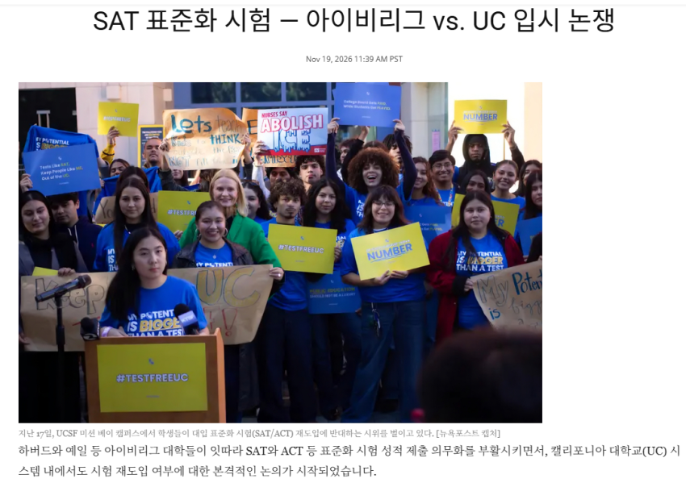
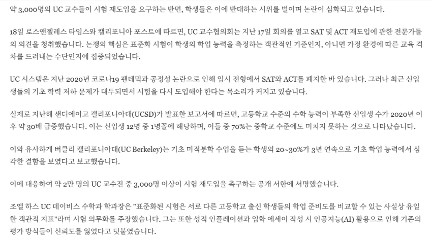
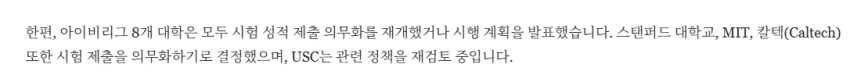
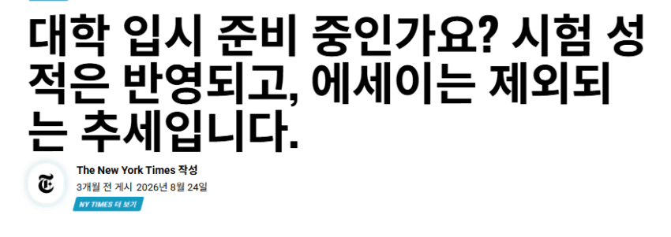
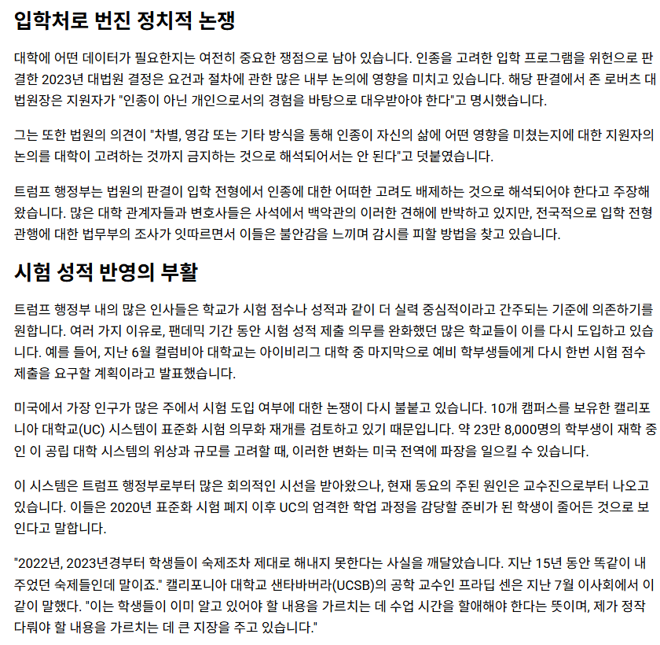
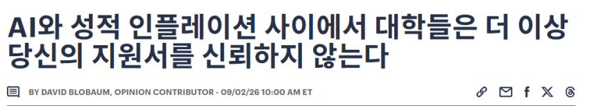
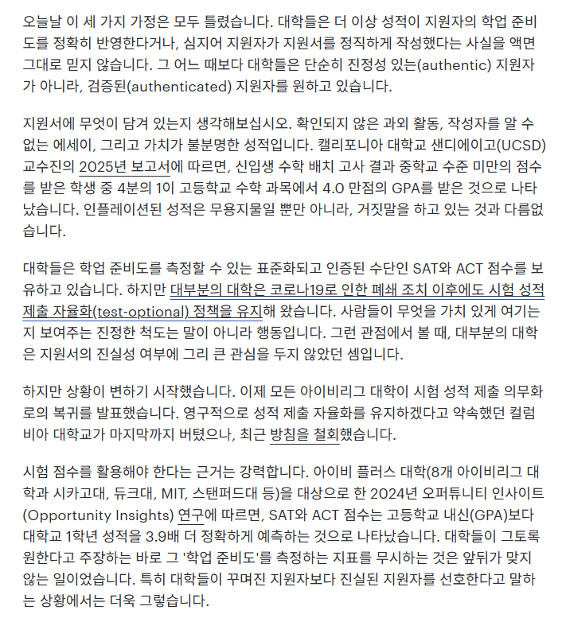
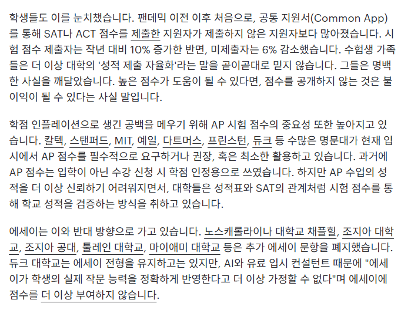
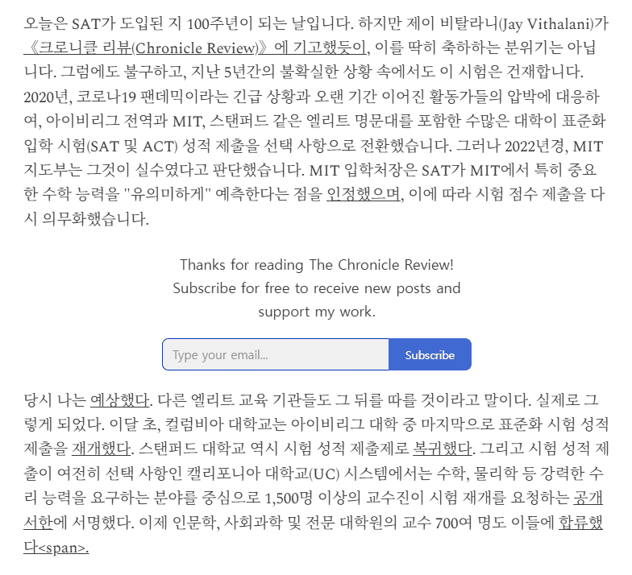
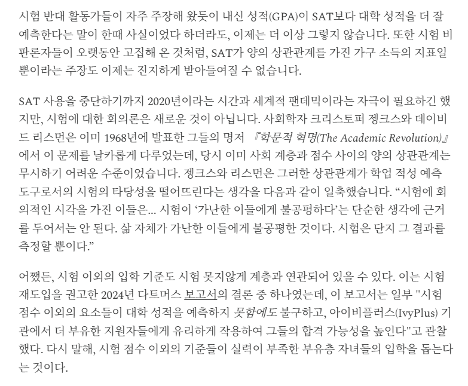

ai 나온 2024 이후로 쓰여진 생기부,내신 아예 못믿는다고
공적 통제를 받는 표준화시험만이 앞으로 유일한 평가지표라고 기사 쏟아지는중
아이비리그,mit스탠퍼드칼텍이 제일먼저 참여하고 uc도 교수들3000명이 서명중이라함
댓글
수집 당시 댓글 175개
· ㅇㅇ · 11.21 16:39:46
· (⌒,_>⌒) · 11.21 17:01:41
ㅇㅇ · 11.21 12:38:43
네오레퀴엠 · 11.21 12:38:49
ㅇㅇ · 11.21 12:38:49
· ㅇㅇ · 11.21 12:39:57
ㅇㅇ · 11.21 12:39:25
· ㅇㅇ · 11.21 18:24:13
かなたん · 11.21 12:39:34
ㅇㅇ · 11.21 12:39:56
모하메드압두르후세인 · 11.21 12:40:32
· ㅇㅇ · 11.21 12:42:41
· ㅇㅇ · 11.21 12:53:06
· GookAllergy · 11.21 15:24:07
· ㅇㅇ · 11.21 15:47:14
· ㅇㅇ · 11.21 18:14:29
ㅇㅇ · 11.21 12:41:21
2대남 · 11.21 12:41:23
· 모하메드압두르후세인 · 11.21 12:42:59
ㅇㅇ · 11.21 12:41:42
ㅇㅇ · 11.21 12:41:47
ㅇㅇ · 11.21 12:42:08
ㅇㅇ · 11.21 12:42:20
· ㅇㅇㅇ · 11.21 17:37:56
ㅇㅇ · 11.21 12:42:45
· ㅇㅇ · 11.21 12:44:36
ㅇㅇ · 11.21 12:43:54
공정성장 · 11.21 12:44:35
ㅇㅇ · 11.21 12:44:39
· ㅇㅇ · 11.21 12:45:31
· 공정성장 · 11.21 12:46:54
· 공정성장 · 11.21 12:49:51
ㅇㅇ · 11.21 12:44:58
식물빌런 · 11.21 12:46:21
식물빌런 · 11.21 12:47:39
· ㅇㅇ · 11.21 12:53:42
· ㅇㅇ · 11.21 14:03:37
파치카 · 11.21 12:48:22
· 파치카 · 11.21 12:49:34
· ㅇㅇ · 11.21 12:53:30
· ㅇㅇ · 11.21 14:38:07
ㅇㅇ · 11.21 12:48:29
ㅇㅇ · 11.21 12:48:54
히이잉 · 11.21 12:49:10
ㅇㅇ · 11.21 12:49:56
ㅇㅇ · 11.21 12:50:29
ㅇㅇ · 11.21 12:50:39
ㅇㅇ · 11.21 12:52:35
ㅇㅇ · 11.21 12:53:01
멋진남자 · 11.21 12:54:12
· ㅇㅇ · 11.21 13:45:45
ㅇㅇ · 11.21 12:55:38
ㅇㅇ · 11.21 12:56:38
ㅇㅇ · 11.21 12:56:55
ㅇㅇ · 11.21 12:58:22
DC전사쿠루미쨩 · 11.21 12:58:43
ㅇㅇ · 11.21 12:59:35
ㅇㅇ · 11.21 13:04:17
ㅇㅇ · 11.21 13:06:46
ㅇㅇ · 11.21 13:08:13
ㅇㅇ · 11.21 13:21:30
· ㅇㅇ · 11.21 13:27:18
ㅇㅇ · 11.21 13:22:43
ㅇㅇ · 11.21 13:26:49
· ㅇㅇ · 11.21 13:33:56
ㅇㅇ · 11.21 13:28:09
ㅇㅇ · 11.21 13:31:45
· ㅇㅇ · 11.21 13:38:16
· ㅇㅇ · 11.21 15:10:00
ㅇㅇ · 11.21 13:40:22
ㅇㅇ · 11.21 13:41:44
ㅇㅇ · 11.21 13:44:54
ㅇㅇ · 11.21 13:59:20
ㅇㅇ · 11.21 14:14:23
ㅇㅇ · 11.21 14:17:59
ㅇㅇ · 11.21 14:19:23
ㅇㅇ · 11.21 14:22:49
히이잉 · 11.21 14:25:10
· ㅇㅇ · 11.21 17:00:24
ㅇㅇ · 11.21 14:26:23
ㅇㅇ · 11.21 14:34:12
ㅇㅇ · 11.21 14:47:06
ㅇㅇ · 11.21 14:51:42
ㅇㅇ · 11.21 14:56:30
ㅇㅇ · 11.21 14:58:39
ㅇㅇ · 11.21 15:06:51
ㅇㅇ · 11.21 15:15:54
dd · 11.21 15:35:28
ㅇㅇ · 11.21 15:37:34
ㅇㅇ · 11.21 15:41:22
ㅇㅇ · 11.21 15:47:07
Advil · 11.21 16:08:53
ㅇㅇ · 11.21 16:10:49
ㅇㅇ · 11.21 16:25:40
ㅇㅇ · 11.21 16:52:39
VWVWV · 11.21 17:20:09
ㅇㅇ · 11.21 18:10:29
· ㅇㅇ · 11.21 19:07:15
· ㅇㅇ · 11.21 19:35:04
· ㅇㅇ · 11.21 19:35:30
ㅇㅇ · 11.20 18:24:09
· ㅇㅇ · 11.20 18:24:47
· 개댇지 · 11.20 18:50:26
· ㅇㅇ · 11.20 18:57:26
· ㅇㅇ · 11.20 18:59:05
· 꽤체 · 11.20 18:59:47
· ㅇㅇ · 11.20 19:41:00
· ㅇㅇ · 11.20 19:42:04
· 개댇지 · 11.20 19:51:56
· ㅇㅇ · 11.20 19:55:24
· 개댇지 · 11.20 19:56:20
· 산업용 · 11.20 19:57:01
· 부엉냥이 · 11.20 20:59:41
· 네오레퀴엠 · 11.21 12:38:56
· 네오레퀴엠 · 11.21 12:39:13
· ㅇㅇ · 11.21 12:42:06
· S＆P500 · 11.21 12:50:08
ㅇㅇ · 11.20 18:24:39
· ㅇㅇ · 11.21 12:46:09
ㅇㅇ · 11.20 18:24:56
ㅇㅇ · 11.20 18:25:23
· lmloo · 11.20 18:49:15
· 부엉냥이 · 11.20 21:00:07
· ㅇㅇ · 11.21 12:39:32
· ㅇㅇ · 11.21 12:43:10
ㅇㅇ · 11.20 18:26:37
ㅇㅇ · 11.20 18:38:29
· lmloo · 11.20 18:48:30
· ㅇㅇ · 11.20 18:54:42
· ㅇㅇ · 11.20 19:05:46
· ㅇㅇ · 11.20 19:05:57
· ㅇㅇ · 11.20 19:18:52
· ㅇㅇ · 11.20 19:36:13
· ㅇㅇ · 11.21 12:43:37
· ㅇㅇ · 11.21 12:57:27
· 애캐토선관위 · 11.21 13:00:59
· ㅇㅇ · 11.21 13:15:25
· ㅇㅇ · 11.21 13:16:21
ㅇㅇ · 11.20 18:42:50
ㅇㅇ · 11.20 18:49:50
· ㅇㅇ · 11.21 14:19:25
ㅇㅇ · 11.20 18:52:19
· ㅇㅇ · 11.20 19:12:44
· ㅇㅇ · 11.20 19:13:55
· ㅇㅇ · 11.20 19:14:12
· ㅇㅇ · 11.21 12:44:34
· ㅇㅇ · 11.21 13:16:48
· ㅇㅇ · 11.21 13:36:33
· ㅇㅇ · 11.21 14:15:45
· ㅇㅇ · 11.21 14:23:00
637 · 11.20 18:58:51
ㅇㅇ · 11.20 19:01:43
ㅇㅇ · 11.20 19:04:45
ㅇㅇ · 11.20 19:11:13
ㅇㅇ · 11.20 19:11:23
ㅇㅇ · 11.20 19:27:35
· ㅇㅇ · 11.20 19:31:26
· ㅇㅇ · 11.20 19:32:08
· 식물인간먹는비건 · 11.20 19:51:07
· ㅇㅇ · 11.20 19:57:23
· 네오레퀴엠 · 11.21 12:40:15
· ㅇㅇ · 11.21 12:42:35
· 너는ㅄ이맞습니다 · 11.21 15:10:45
ㅇㅇ · 11.20 19:57:16
안록산 · 11.20 20:18:03
ㅇㅇ · 11.20 20:40:12
· 부엉냥이 · 11.20 21:01:07
부엉냥이 · 11.20 20:59:00
봇치쟝 · 11.21 12:37:01
ㅇㅇ · 11.21 12:37:36
ㅇㅇ · 11.21 12:38:04
· ㅇㅇ · 11.21 12:41:17
ㅇㅇ · 11.21 12:38:34
· ㅇㅇ · 11.21 12:38:49
· ㅇㅇ · 11.21 12:42:46